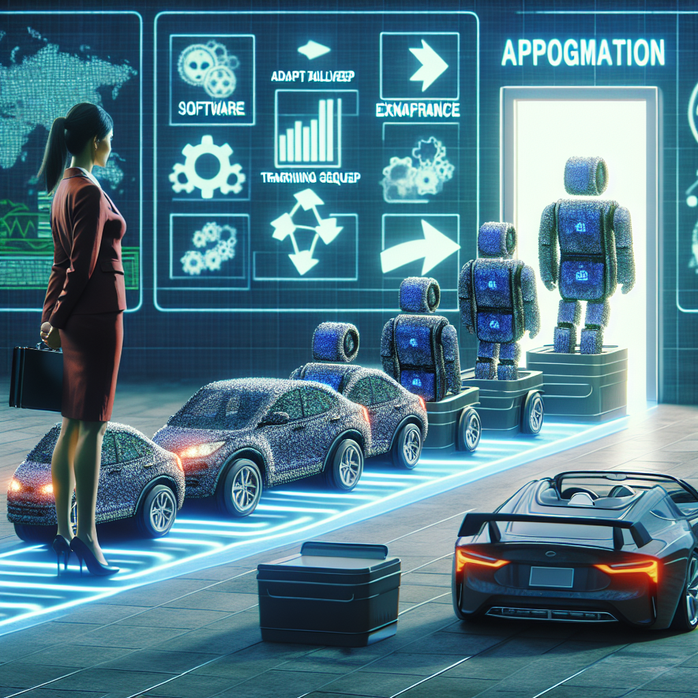

Conversation Visualization
Voice to text to image to wonderment.
Contents
Background
niplav and I were discussing what makes good living room decor. It must be thought-provoking and not distracting. Movement is nice, but too much or too quickly violates the distraction rule. The idea of an aquarium or terrarium was brought up. niplav then came up with the idea of a conversation visualizer (CV): create an image based on the last few minutes of conversation and display it for all to see.
Construction
Overview
The CV consists of three parts that build off of each other:
-
Voice: Record a conversation
-
Text: Transcribe the audio recording and summarize
-
Image: Create an image based on the transcription
Throw this in a simple while loop that continues to go so long as there aren't any errors and power is maintained.
Software
I used OpenAI and its API to keep everything in the same ecosystem: Whisper for transcription, GPT for summarization, and DALL·E for image generation.
 Shortening timelines $10.64 at a time
Shortening timelines $10.64 at a time
Code can be found here: visualization.py.
Here are the not-quite-foolproof-because-if-you're-reading-this-you-probably-have-some-technological-ability instructions to get the software working:
-
Download Python3, all packages used in visualization.py, and visualization.py
-
Create an OpenAI account
-
Follow OpenAI's Developer quickstart guide
-
Allow microphone and accessibility access to the program that will run visualization.py
Hardware
Hardware is user-dependent and offers a few options:
[how i made the frame]
Integration
Examples
I
The first full run through of the record-transcribe-summarize-visualize logic was after watching Pearl Jam's Do the Evolution:
 the conversation discusses how everything seems to lead to war, with references to nuclear bombs, marching people, and planes dropping bombs. The first part of the conversation mentions the progression from fish to dinosaurs to cavemen, highlighting a rise in power. It is noted that politicians and military power are at the forefront towards the end. The conversation concludes that there is a continuous escalation of power and suggests that the message may be that war is inevitable throughout history.
the conversation discusses how everything seems to lead to war, with references to nuclear bombs, marching people, and planes dropping bombs. The first part of the conversation mentions the progression from fish to dinosaurs to cavemen, highlighting a rise in power. It is noted that politicians and military power are at the forefront towards the end. The conversation concludes that there is a continuous escalation of power and suggests that the message may be that war is inevitable throughout history.
II
 The conversation starts with [name] discussing a poker tournament he is hosting on Friday with some friends. The other person asks if the friends playing poker are also from church, to which [name] replies that he is not sure. The conversation then takes a random turn as they start discussing the taste and smell of broccoli. They talk about how the broccoli shrinks when microwaved due to the starches and expansion of frozen water. The person suggests that if you microwaved a cup of ice, it would become more full, while [name] disagrees and says it would be less full.
The conversation starts with [name] discussing a poker tournament he is hosting on Friday with some friends. The other person asks if the friends playing poker are also from church, to which [name] replies that he is not sure. The conversation then takes a random turn as they start discussing the taste and smell of broccoli. They talk about how the broccoli shrinks when microwaved due to the starches and expansion of frozen water. The person suggests that if you microwaved a cup of ice, it would become more full, while [name] disagrees and says it would be less full.
III
The person asks their mom why she chose not to get her ears cleaned by the random Indian dudes on the street. The mom explains that she didn't want them to use unsanitary instruments on her ears. The person wonders what's the worst that could happen, suggesting that the mom would just have dirty ears while in Mumbai, which would make for an interesting story to share on a postcard.
IV
 The speaker, Kim, believes that the efforts to improve shelters for the homeless in Cleveland are inadequate. There are too many people living on the streets, and the existing shelters are overcrowded, particularly during winter when it is dangerously cold. Kim mentions that people have to wait in line as early as 4 o'clock in the afternoon to secure a spot for the night.
The speaker, Kim, believes that the efforts to improve shelters for the homeless in Cleveland are inadequate. There are too many people living on the streets, and the existing shelters are overcrowded, particularly during winter when it is dangerously cold. Kim mentions that people have to wait in line as early as 4 o'clock in the afternoon to secure a spot for the night.
V
The conversation is about someone who got shot in the face while dreaming and thought about whether dying in their dream would mean actual death. They realized they were still alive but their cheek was injured. They also mentioned how they enjoyed being able to come out of a dream and go back in. The conversation then takes a sudden turn to talk about diving through a window and breaking it to kill someone with a knife, indicating a shift in topic.
VI
 The conversation discusses Dreamprint, a company that makes AI art and ships it directly to consumers. The main topic is the biggest bottleneck in scaling this business, but the conversation takes a comical turn with one participant jokingly attributing the bottleneck to aliens attacking them in their sleep. The conversation also briefly mentions the possibility of the aliens coming from space or the inside of the earth, and a humorous reference to seeing the aliens on CNN riding jet skis.
The conversation discusses Dreamprint, a company that makes AI art and ships it directly to consumers. The main topic is the biggest bottleneck in scaling this business, but the conversation takes a comical turn with one participant jokingly attributing the bottleneck to aliens attacking them in their sleep. The conversation also briefly mentions the possibility of the aliens coming from space or the inside of the earth, and a humorous reference to seeing the aliens on CNN riding jet skis.
VII

The conversation is about software programs that teach themselves to run efficiently, similar to how cars learn to improve over time. The programs go through a series of failures and learn from them until they eventually succeed. The person compliments the program and expresses their interest in it, mentioning their intention to return home.
VIII

IX
X
Reactions
See Also